raises the minority densities at the depletion edges by
raises the minority densities at the depletion edges by  ,
,  ; small-signal
; small-signal Derivation
- Law of the junction: quasi-Fermi levels flat across the thin depletion region, split by
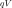
: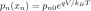
, . - In the neutral n side the excess holes diffuse and recombine:
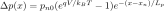
(continuity). - Hole current at
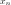
: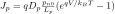
, with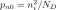
. Same for electrons. Sum (no recombination in the depletion region):
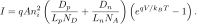
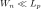
): replace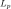
by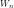
. Recombination in the depletion region adds a term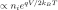
(ideality at low current); high injection also gives .Small-signal model
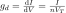
: at 1 mA,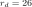
Ω. Stored minority charge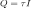
gives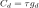
, which dominates in forward bias and limits switching (reverse recovery).Temperature
Worked example
Si diode,
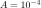
cm²,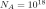
, ,
, 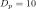
cm²/s,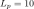
µm (one-sided, holes dominate):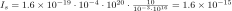
A. For 1 mA: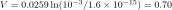
V.Engineering applications
Rectifiers, the diode in circuits (piecewise-linear models, ESD protection), band-gap voltage references (
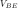
+ PTAT), temperature sensors, the photodiode and solar-cell equation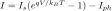
(solar cells), LED I–V (LEDs).Pitfall
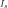
is not a constant of the diode: it changes by ~×2 every 5 K and with area; use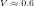
–0.7 V only as a rough rule for Si at mA currents.